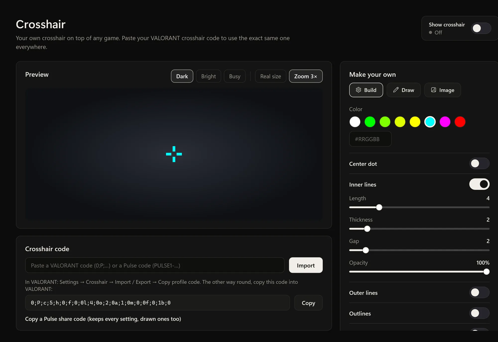
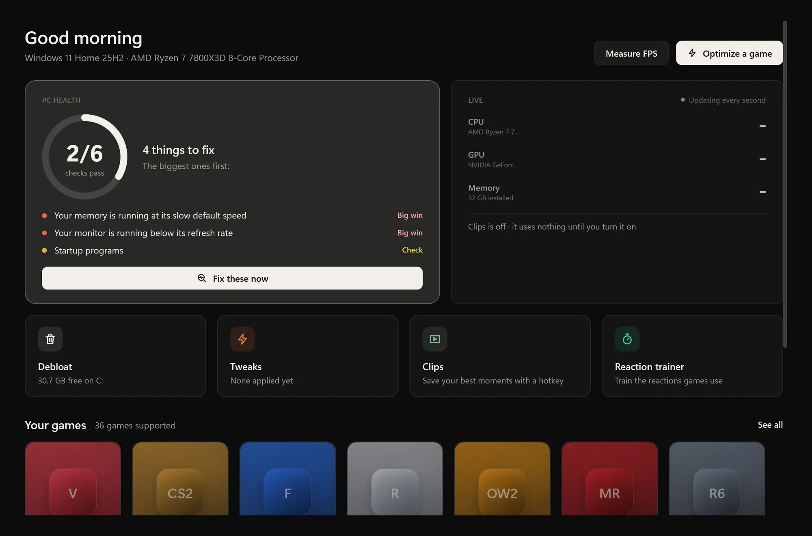
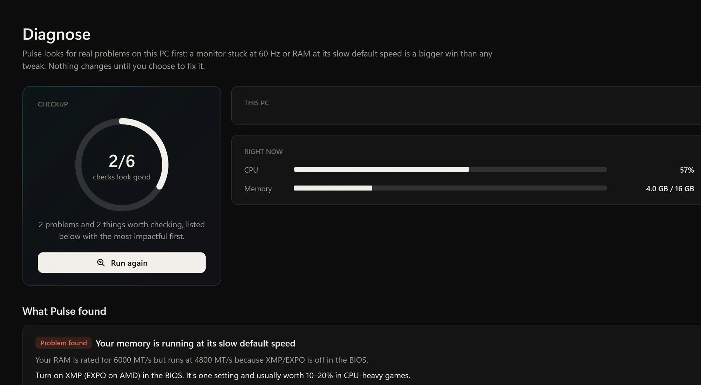
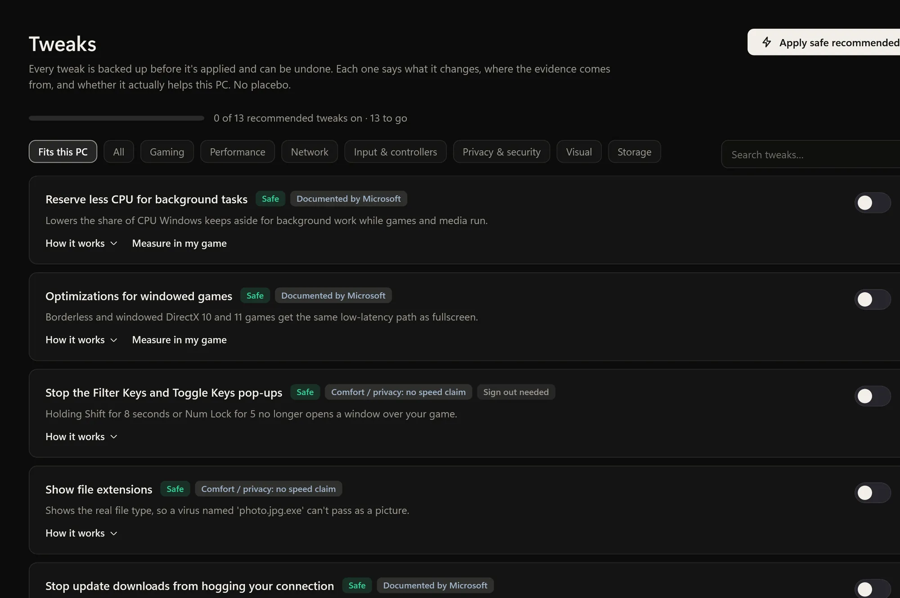
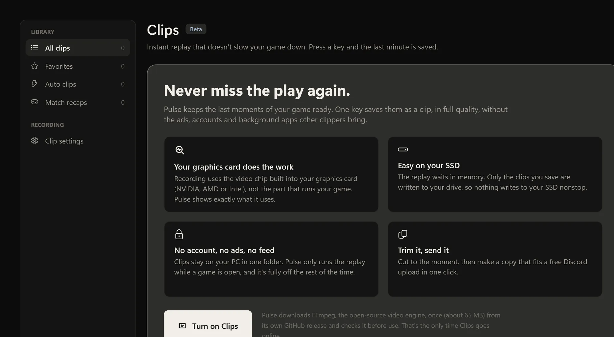
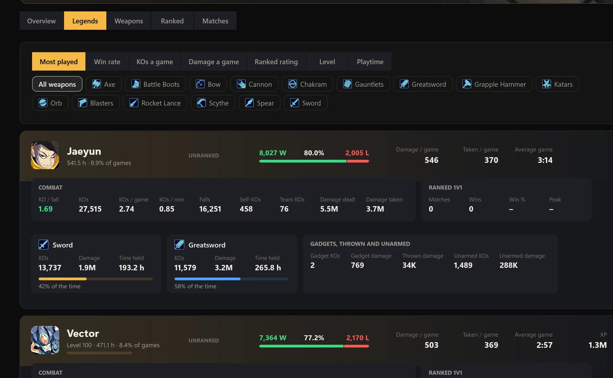
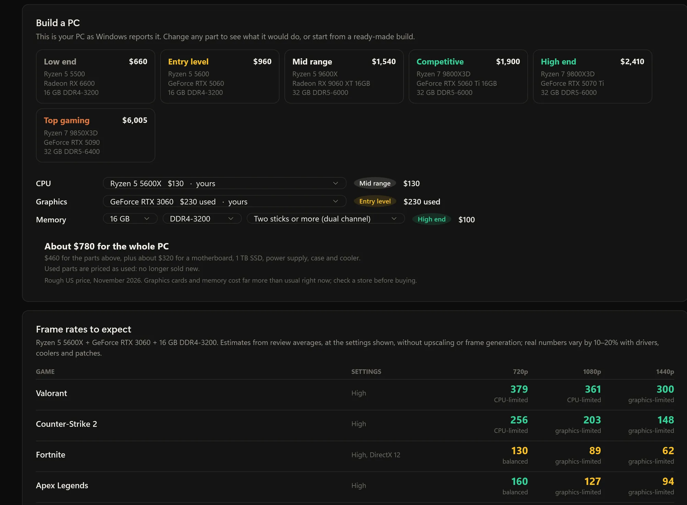
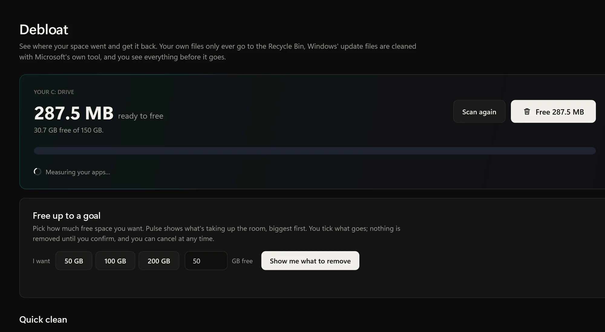
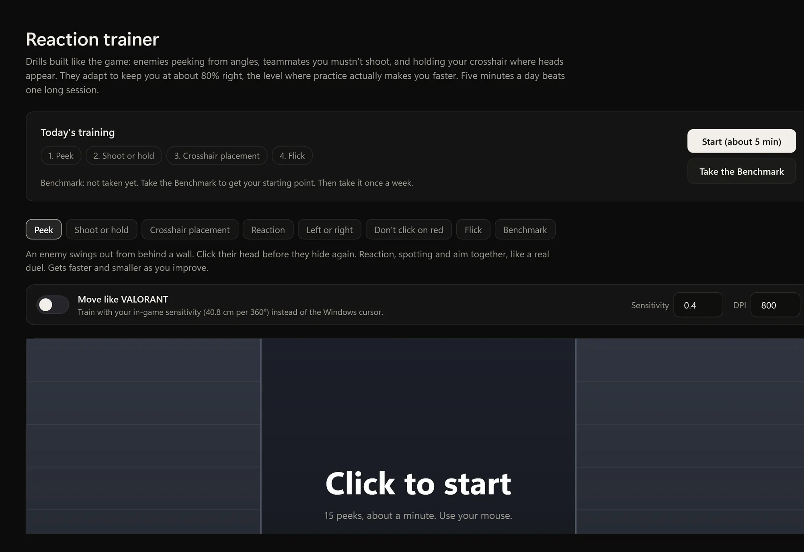
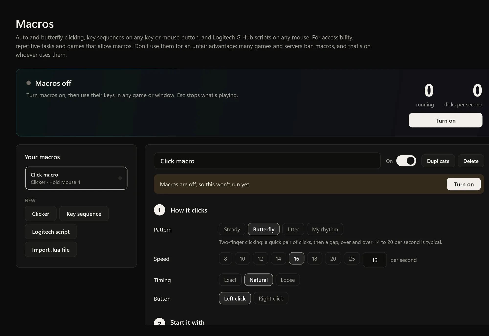

Crosshair overlay
Your crosshair over any game. Paste a VALORANT code to use the exact same one everywhere.
Pulse checks your PC for the setup mistakes that cost the most frames, fixes them with tweaks you can measure and undo, and adds full-quality clips, match trackers and a PC builder. One free app for your gaming PC.
Free and open source. Windows 10 and 11, 64-bit.

Diagnose
Before a single tweak, Pulse looks for the mistakes worth the most frames, sorted by how much each one costs you. Every finding comes with steps for your Windows, graphics card and motherboard.

Tweaks and Measure
Each tweak says exactly what it changes and what to expect, only appears if it fits your PC, saves the old value first, and comes back off in one click. Then Measure tests it in your own game.

Tweak off and on in alternating runs, after a warm-up, so heat and background tasks hit both sides.
Clips
Instant replay recorded by the video chip in your graphics card (NVENC, AMF or Quick Sync), not the part running your game. One key saves the last minute in full quality. No account, no watermark, no uploads.

Trackers
Pulse saves your VALORANT and Brawlhalla matches as you play and turns them into a tracker: scoreboards, rank history, best agents and legends, and a smurf check that always says why.

PC builder
Look up any CPU, graphics card or memory and see how it ranks, what it costs, and what it would do in your PC. The builder starts as your PC and shows the frame rates to expect in popular games at 720p, 1080p and 1440p.

No Windows PC handy? Try the FPS calculator in your browser, or read the FPS guides for VALORANT, Fortnite and CS2.
Debloat
Most debloat scripts rip things out blindly. Pulse shows you everything first, explains each item, and keeps what Windows and your games need. Xbox sign-in and Gaming Services are never offered.

Also in Pulse
The tools players usually install one by one, built to work together and stay out of your way.

Your crosshair over any game. Paste a VALORANT code to use the exact same one everywhere.

Drills built like the game: peeks, flicks and crosshair placement that adapt to keep you improving.

Auto clicking, key sequences and Logitech G Hub scripts, paused while an anti-cheat runs.
A light overlay with frame rate and frame times, from PresentMon.
A higher FPS cap, allowed performance flags and your own font, kept through Roblox updates.
Guides, current prices, best gear and prebuilt picks, refreshed every night.
Getting started
The first time you open Pulse, it walks you through it. Nothing changes without your OK.
One small file. Nothing to install, and it updates itself.
Pulse tunes its checks and recaps to what you play.
Diagnose finds the problems worth the most frames.
The recommended tweaks for your PC, each one undoable.
Safety
These promises are checked by automated tests on every build. If the code ever breaks one, the build fails.
Every release is built by GitHub from the public code, with a SHA-256 checksum and signed build proof. With the GitHub CLI installed, run:
gh attestation verify Pulse.exe --repo PulseOptimizerApp/PulseWindows shows that for new apps that aren't code-signed yet. Click More info, then Run anyway. You can read every line of the code first.
Yes. No ads, no account, no paid tier, no upsell. It's open source under the AGPL-3.0 license, so anyone can read the code, build it themselves, or keep it going.
If your PC has a setup problem (a monitor at 60 Hz, RAM at its default speed, games on the built-in graphics), often a lot, and Diagnose finds those first. If your PC is already set up well, tweaks make small differences, and Measure shows you honestly which ones helped on your PC.
The optimizer, clips, trackers and recaps never read, change or inject into running games. Recaps and trackers use each game's official data (Riot's APIs, Valve's Game State Integration, Brawlhalla's public API). Macros are different: many games ban them, so Pulse pauses them while an anti-cheat runs, and you should only use them where a game's rules allow.
Most tweaks change system-wide settings, and restore points need admin access. If the prompt bothers you, turn on "Skip the admin prompt" and Pulse opens through a Windows scheduled task. Turn it off any time.
Open Undo and restore and choose Undo everything. Each setting goes back to the exact value it had before. You can also roll back with the Windows restore point Pulse makes before your first change.
Diagnose, tweaks, clips and the FPS counter work with any game. Match recaps and auto clips: VALORANT, Counter-Strike 2, League of Legends and Dota 2. Trackers: VALORANT and Brawlhalla. Game-specific checklists cover 36 games, including Fortnite, Apex Legends, Marvel Rivals and Roblox.
If you have version 0.4.11 or older, download the new version once from this page. It updates itself from then on. Your settings, clips and undo history stay where they are.
Free, open source, no account. One file, and it updates itself.
Free and open source. Windows 10 and 11, 64-bit.